Two memories are now in the engine. The Grudge's memory of where it was hurt runs on the GPU, and the Grudge is planet 7 of the run (merged, PR #405). The second is new: a crust that builds up where the slime has lived and fades slowly once it leaves. Nothing reads the crust yet; this page is its first look, behind the key crust=1.
Run seed 1, planet 7, four soldiers standing their ground with the rifle. Left: scar_weight=0. Right: the run's setting, scar_weight=1. One seed, so this is a look, not a census.
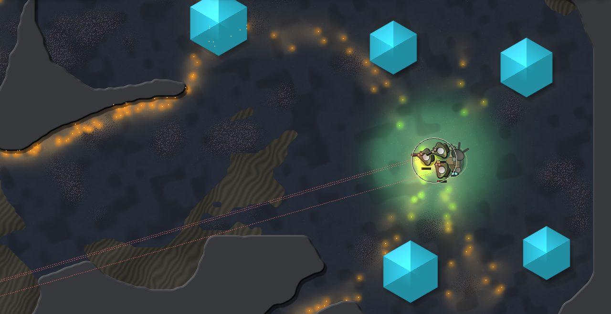
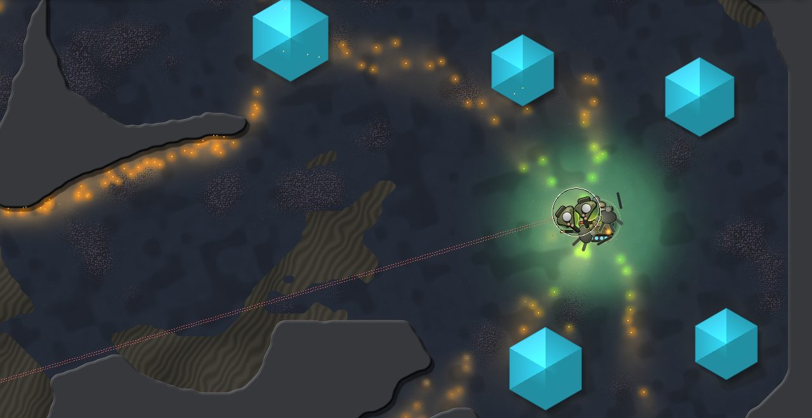
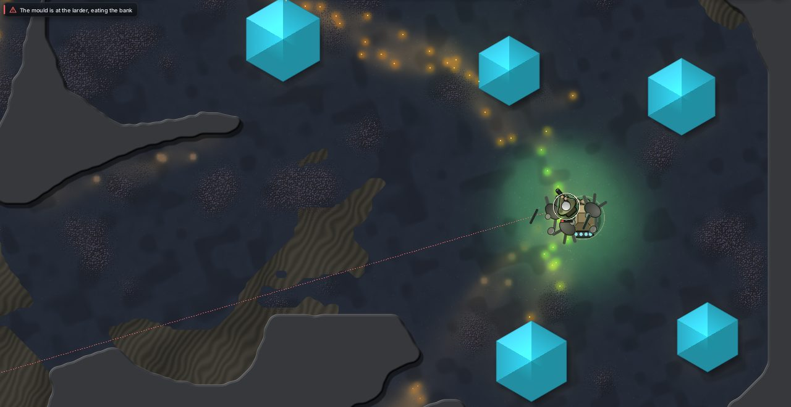
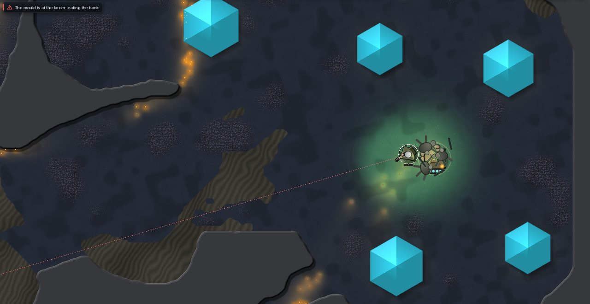
The squad goes 8 seconds sooner with the memory on. That is a small difference: on planet 7 a four-soldier squad that stands still is overrun either way. The memory should matter more in a longer fight from one place, and its number is a first guess to retune in play.
Planet 3, run seed 1, the squad idle. Left: the game. Right: the crust the engine kept, white where it is full and black where there is none, with the cells holding walkers right now painted orange. A cell fills in a minute of steady living and halves in two minutes once the slime leaves.
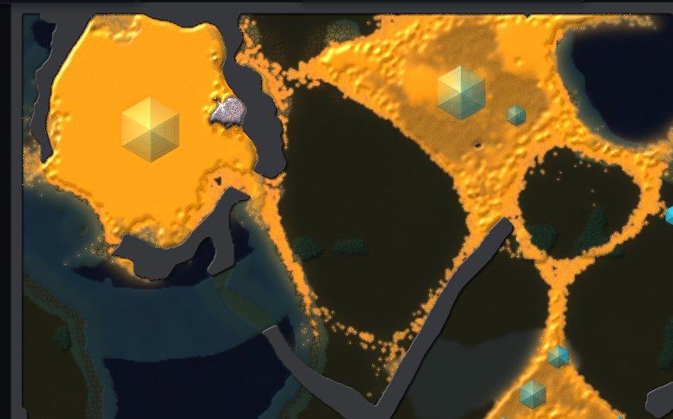
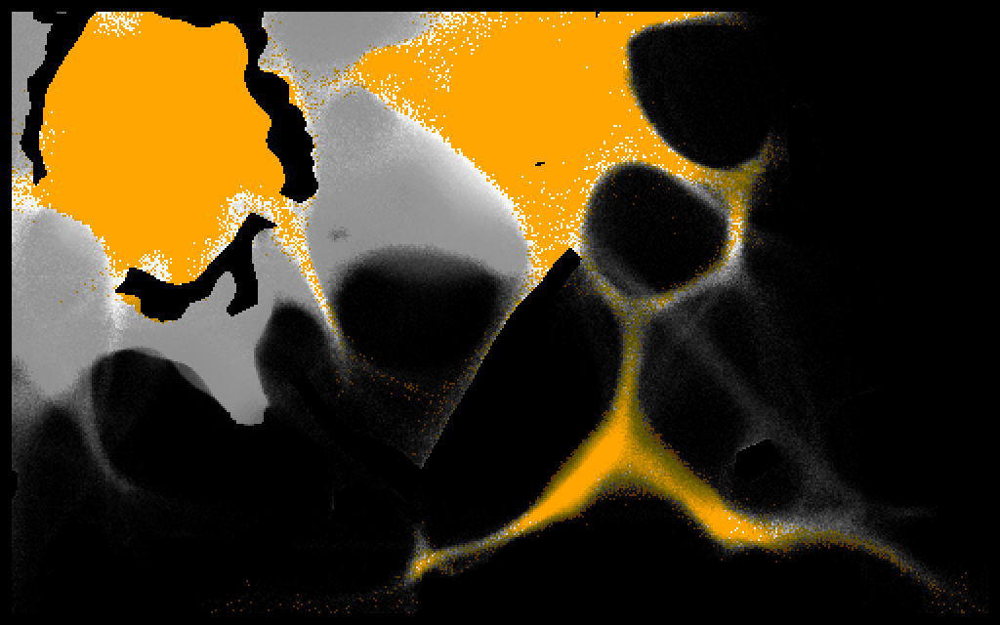
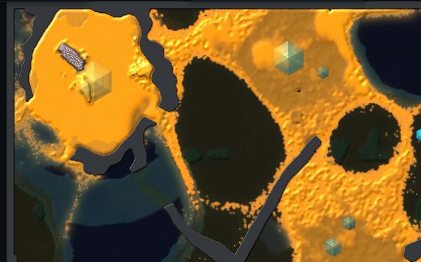
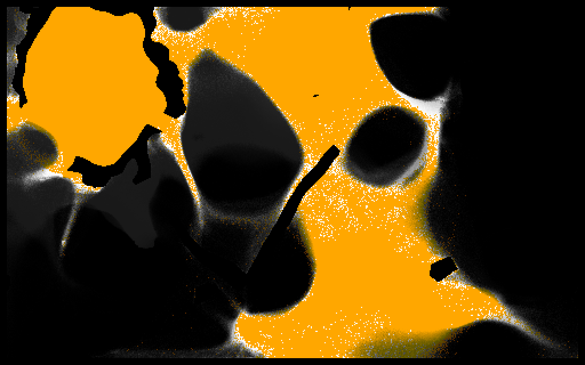
| Time | Crust over 0.05 | Over 0.3 | Of those, bare now | Full (over 0.95) | Walkers' cells |
|---|---|---|---|---|---|
| 1:00 | 52,200 | 45,500 | 7% | 31,800 | 44,100 |
| 2:00 | 62,700 | 47,100 | 48% | 25,600 | 26,900 |
| 3:00 | 66,100 | 51,700 | 45% | 25,700 | 29,800 |
| 5:00 | 72,400 | 51,200 | 26% | 35,300 | 39,400 |
| 8:00 | 79,700 | 57,100 | 11% | 48,500 | 51,700 |
As the reviewers predicted, the crust is one plate over the slime's whole range, not a map of its roads. It shows best after the slime pulls back, as a record of the ground it used to hold. The engine's crust matches a copy worked out on the CPU from the same game within 1% at 1:00 and 3:00.
The same moment (planet 3, 3:00) at three zooms, near the home body's south shore, where the slime had spread over the shallows and pulled back. The crust is drawn as satin patches on bare ground: the more crust, the more of the ground is glazed. Each patch's edge toward the light catches a thin highlight. It hides under the slime, as the soil's own detail does.
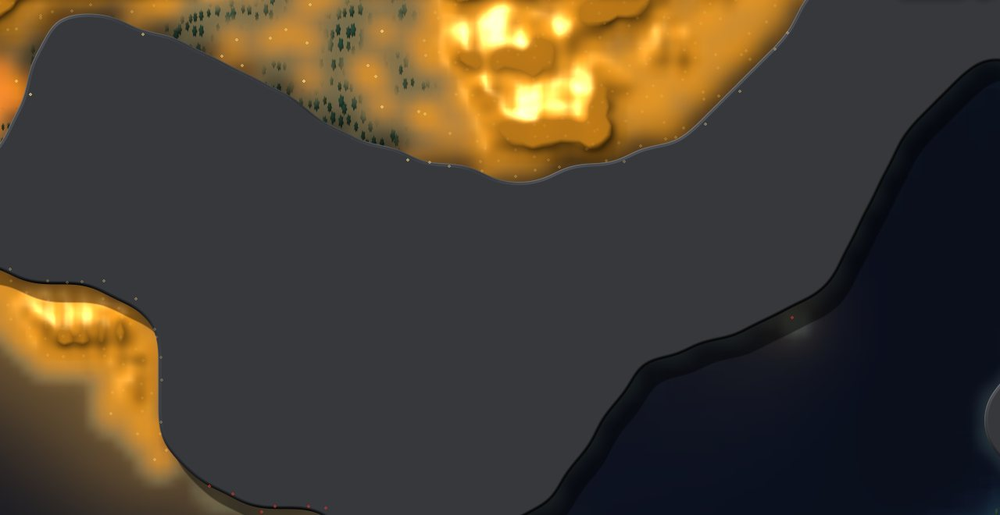
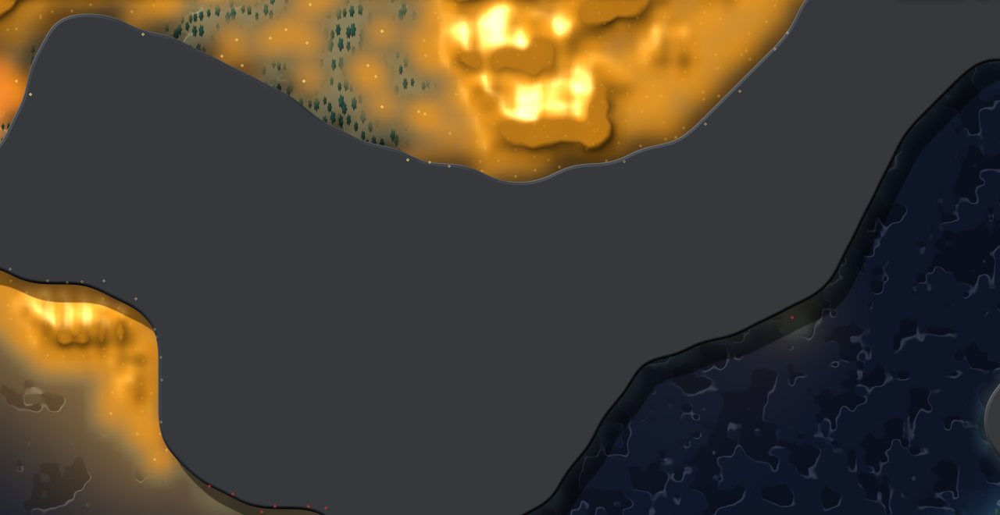
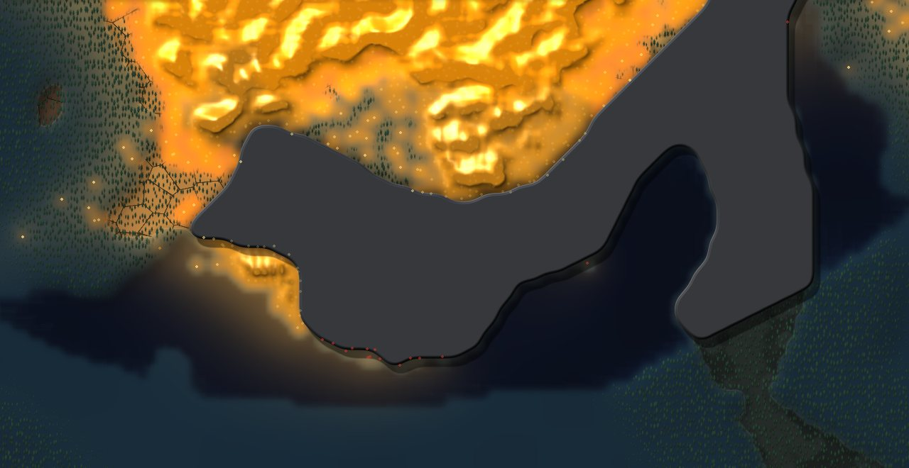
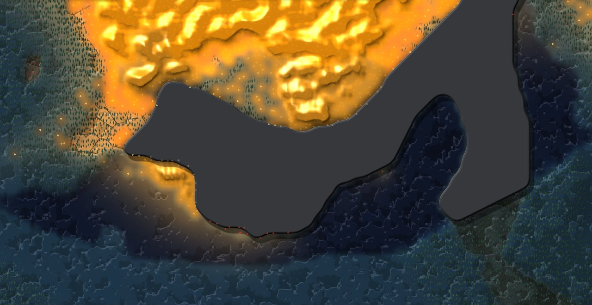
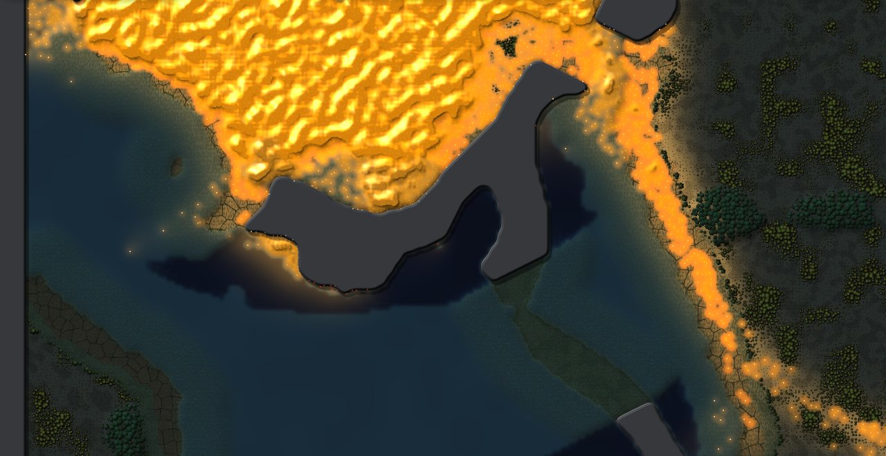
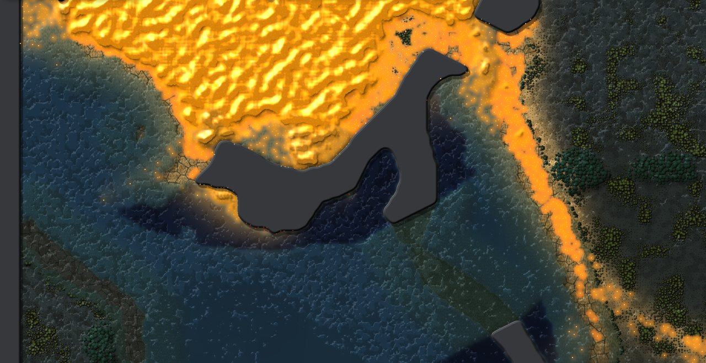
This is the first look, labelled so you can see what changed. Before the crust is on by default, it goes through the plan's blind "name the ground" quiz beside char, rubble, barren ground and damp bank.